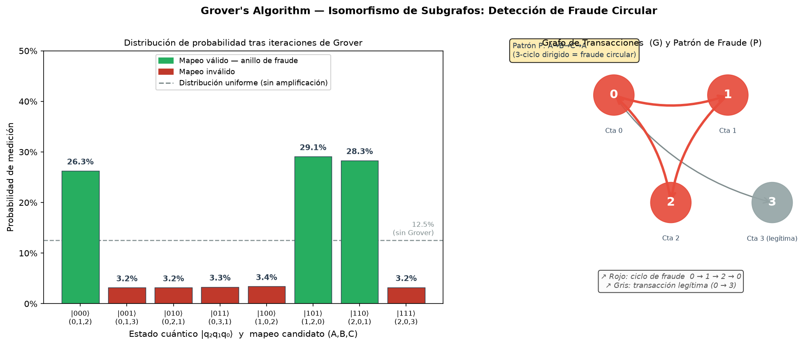
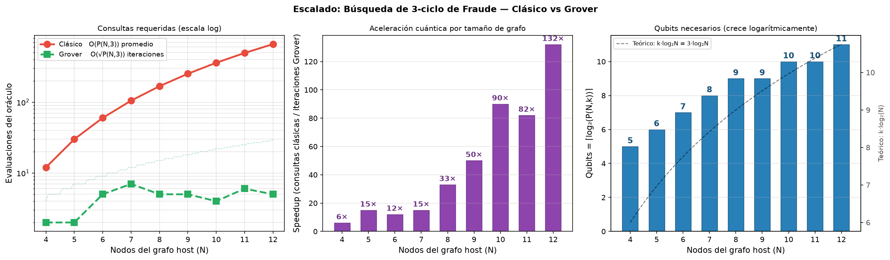
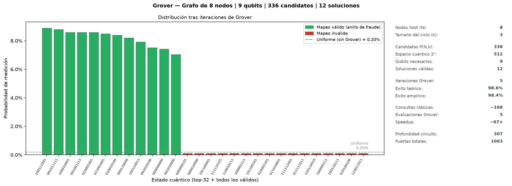

Factibilidad de computación cuántica como coprocesador para isomorfismo de subgrafos en grafos transaccionales masivos.
El lavado de dinero mediante fraude circular es un problema de cumplimiento normativo (AML — Anti-Money Laundering) que enfrentan bancos, fintechs y unidades de inteligencia financiera.
Los motores de reglas actuales degradan al buscar ciclos de 3+ saltos sobre millones de cuentas:
| Investigación manual por analista | horas/caso |
| Casos pendientes de revisión | miles/mes |
| Falsos positivos por reglas rígidas | >90% |
| Ventana de detección | días, no minutos |
Cada hora de retraso facilita que los fondos salgan del sistema financiero rastreable.
Dados dos grafos dirigidos:
Se busca una función inyectiva f: VP → VG tal que:
Fondos ilícitos circulan entre cuentas antes de volver al origen, dificultando el rastreo.
Patrón P: 3 nodos, 3 aristas dirigidas formando un ciclo.
El isomorfismo de subgrafos es un problema de decisión: ¿existe un mapeo f que satisfaga el patrón?
Esta asimetría —verificar en tiempo polinomial, resolver presumiblemente en tiempo exponencial— es la definición misma de la clase NP.
Ullmann demostró que el isomorfismo de subgrafos es NP-Completo mediante reducción desde el problema de la clique (también NP-Completo): toda instancia de clique se transforma en una instancia de isomorfismo de subgrafos en tiempo polinomial.
Consecuencia práctica: si existiera un algoritmo clásico polinomial para este problema, resolvería todo NP en tiempo polinomial (P = NP) — algo que 50 años de investigación no han logrado demostrar ni refutar.
Por eso la industria recurre a heurísticas (VF2, poda por grado) que funcionan bien en promedio pero degradan en el peor caso — justo el caso de los anillos de fraude bien disimulados.
Para el patrón de fraude circular (k=3 nodos) sobre un host de N cuentas, el número de mapeos candidatos a evaluar es:
Para N = 1.000.000 de nodos y k = 5:
candidatos — imposible por fuerza bruta
| Latencia > 30s en consultas profundas |
| Saturación de RAM (árbol de búsqueda) |
| Timeouts en Neo4j > 5 saltos |
| Sin análisis de fraude en tiempo real |
10M cuentas + 50M transacciones, patrón de 3 nodos → peor caso O(N³) ≈ 10²¹ operaciones (Neo4j + VF2).
Aclaración común: Grover no evalúa todos los candidatos "a la vez" como una búsqueda paralela ilimitada — usa interferencia de amplitudes para sesgar la probabilidad de medición hacia las soluciones, logrando O(√N) consultas en vez de O(N).
Búsqueda no estructurada en N elementos con O(√N) evaluaciones del oráculo, frente a O(N) clásico.
Cada mapeo candidato f se codifica como un estado cuántico |f⟩. Con n qubits se representan 2n candidatos en superposición simultánea:
Tras k ≈ (π/4)√(N/t) iteraciones, la probabilidad de medir un isomorfismo válido supera el 90%.
| Métrica | Clásico O(N) | Cuántico (Grover) O(√N) |
|---|---|---|
| Peor caso | O(N) consultas | O(√N) consultas |
| N = 8 candidatos | 8 | ~2.8 |
| N = 1.024 candidatos | 1.024 | ~32 |
| N = 10⁶ candidatos | 10⁶ | ~1.000 |
Búsqueda en 10⁶ elementos con solo 1.000 evaluaciones del oráculo.
Neo4j gestiona ingesta, índices y consultas estándar (≤3 saltos). Consultas profundas (>3 saltos) se derivan al subgrafo candidato.
Subgrafo → Matriz Laplaciana L = D−A → circuito cuántico. Timeout 500ms → fallback clásico heurístico.
QPU en nube (IBM, Braket) o simulador local (AerSimulator + GPU/CPU). Grover ejecuta y mide.
El sistema cuántico no reemplaza Neo4j — actúa como coprocesador asíncrono para consultas de alta profundidad.
| ID | Tipo | Descripción |
|---|---|---|
| REQ-CLA-01/02 | Funcional | Neo4j gestiona ingesta/consultas estándar; API recibe y devuelve resultados |
| REQ-HIB-01 | Funcional | Extracción del subgrafo candidato y Matriz Laplaciana en < T ms |
| REQ-HIB-02 | Funcional | Transpilación de la Laplaciana a puertas cuánticas nativas del hardware |
| REQ-HIB-03 | Funcional | Si latencia > 500ms → derivar a solver heurístico clásico |
| REQ-CUA-01 | Funcional | Ejecución del circuito por un número definido de shots estadísticos |
| RNF-01/02/03 | No Funcional | Sobrecosto QRAM acotado · tolerancia a ruido NISQ · acceso QPU solo si conviene |
AerSimulator es el simulador de vector de estado de Qiskit: ejecuta el circuito cuántico exacto (sin ruido de hardware real) y permite muestrear ("shots") la distribución de probabilidad resultante.
| Backend CPU | AerSimulator() — statevector |
| Backend GPU | device='GPU' (cuStateVec) |
| Shots por ejecución | 1.024 – 4.096 |
| Semilla | fija (reproducibilidad) |
Resultado: 99–100% de éxito empírico en todos los tamaños probados, consistente con la probabilidad teórica de Grover.
Host G: cuentas {0,1,2,3}, aristas (0→1), (1→2), (2→0), (0→3). Patrón: ciclo de 3 nodos. Espacio de búsqueda: 8 candidatos.
| Qubits | 3 |
| Soluciones válidas | 3 (rotaciones del ciclo) |
| Iteraciones Grover óptimas | 1 |
| Prob. teórica de éxito | ~84.8% |
| Backend | Qiskit AerSimulator |
Los 3 estados válidos suben de 12.5% (uniforme) a ~28% c/u; los inválidos caen a ~1.5%.

Para N nodos host y patrón k=3, el número de qubits crece como ⌈log₂ P(N,3)⌉ — mientras el espacio de búsqueda clásico crece factorialmente.
| N | Qubits | Candidatos | Speedup |
|---|---|---|---|
| 4 | 5 | 24 | 12× |
| 6 | 7 | 120 | 24× |
| 8 | 9 | 336 | 67× |
| 10 | 10 | 720 | 180× |
| 12 | 11 | 1.320 | 264× |


336 mapeos candidatos codificados en 9 qubits — éxito empírico ~99%.
Cargar la matriz de adyacencia cuesta O(N) clásico — puede neutralizar la ventaja de O(√N) en grafos masivos.
| Error por puerta | ~0.1–1% |
| Qubits lógicos | < 1.000 |
| Coherencia | microsegundos |
| Colas QPU nube | minutos |
⚠ Resultados probabilísticos: requieren 1024–4096 shots para una distribución estadísticamente confiable.
| Dimensión | Estado | Notas |
|---|---|---|
| Correctitud algorítmica | ✓ Demostrada | Grover provee ventaja cuadrática teórica |
| Arquitectura de integración | ✓ Sólida | Delegación aislada protege el sistema productivo |
| Capa de traducción | ✓ Validada | PoC ejecutable con Qiskit (ver demo/) |
| Hardware actual (NISQ) | ✗ Limitante | Qubits insuficientes para grafos de producción |
| Cuello de botella QRAM | ✗ Sin solución madura | Neutraliza la ventaja en grafos masivos |
| Disponibilidad operativa | ⚠ Condicional | Fallback clásico garantiza uptime |
Corto plazo: simuladores tensoriales locales (GPU). Medio plazo: migrar a QPU con >1000 qubits lógicos FTQC. No se recomienda reemplazar el motor de base de datos clásico.
Lista completa con notas de verificación en REFERENCIAS.md.
Búsqueda Cuántica de Subgrafos — Detección de Fraude Circular